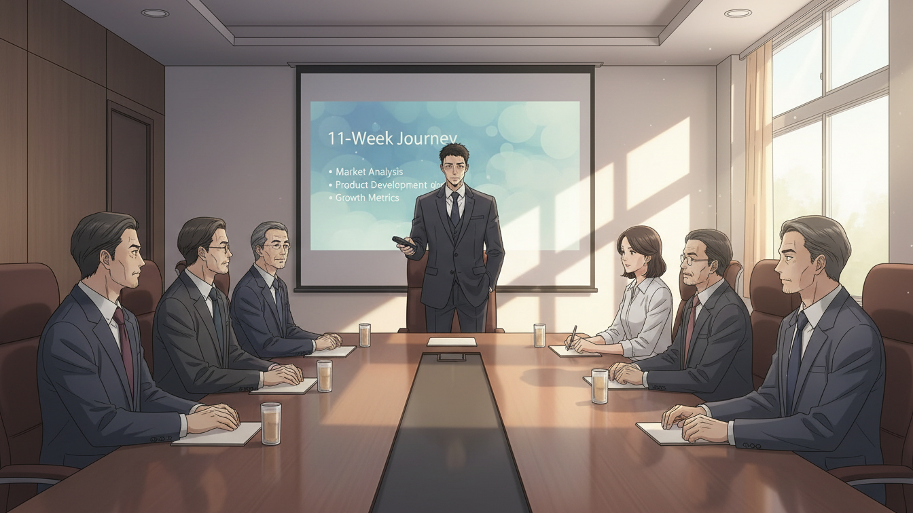
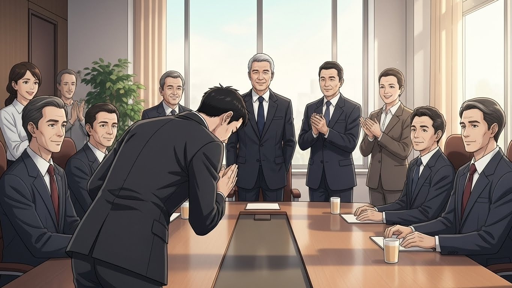
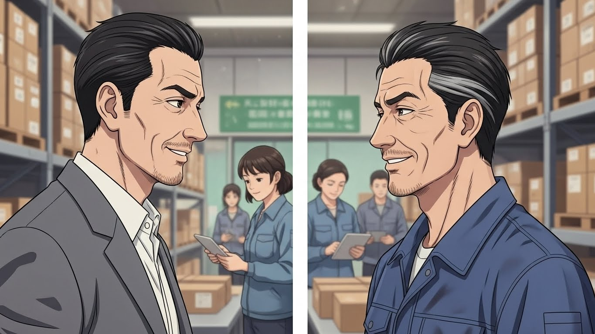
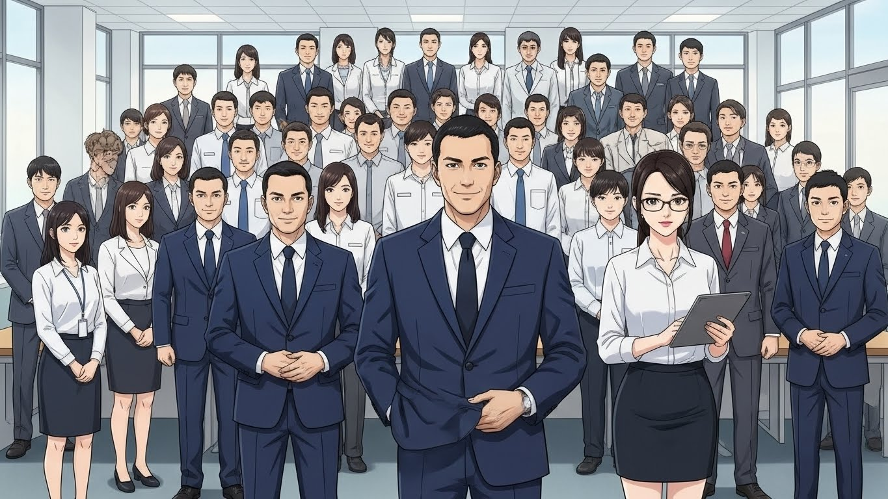
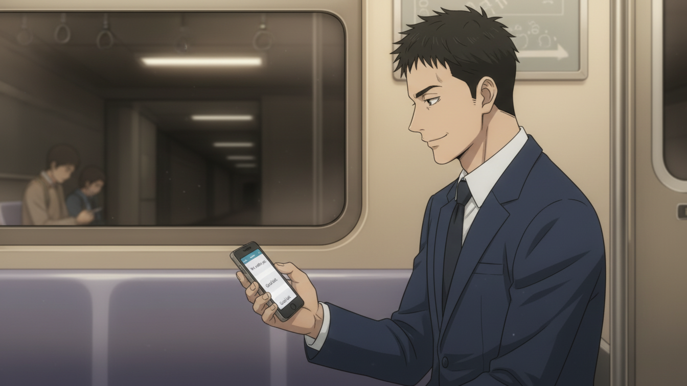

📦 Do, 85% - BJ대한물류 AI 도입 생존기
Episode 19: "인정"

"안녕하십니까."
도진이 인사했다.
목소리가 떨린다.
경영진 10명.
CEO, 부사장, 본부장들.
정민수도 앉아 있다.
"AI 혁신센터 센터장 최도진입니다."
도진이 리모컨을 들었다.
"11주간의 여정을 보고드리겠습니다."
📊 Scene 1: 최종 보고
슬라이드 1: 프로젝트 개요
AI 도입 프로젝트
- 기간: 2025년 1월 6일 ~ 3월 30일 (11주)
- 대상: 16개 센터, 1,000명
- 목표: 적응률 70% 이상
- 결과: 평균 적응률 73.8%
"목표를 초과 달성했습니다."
슬라이드 2: 단계별 성과
Phase 1 (Week 1-6): 파일럿 3개 센터
- 인천 (85명): 90% 적응률
- 부천 (62명): 85% 적응률
- 안양 (54명): 65% 적응률
- 학습: 투명성, 1:1 지원, Peer Influence
"처음 3개 센터에서 전략을 다듬었습니다."
슬라이드 3: Cascade Model
Phase 2 (Week 7-10): 확장 9개 센터
- TF 15명 체제
- Cascade Model (3-3-3 순차 진행)
- 9개 센터 평균 74.3%
"동시가 아닌 순차로 리스크를 관리했습니다."
슬라이드 4: 자율 확산
Phase 3 (Week 11): 자율 요청 4개 센터
- 광명, 시흥, 군포, 오산
- 센터장 직접 요청
- 자발적 확산 달성
"마지막 4개 센터는 저희가 설득하지 않았습니다. 그들이 원했습니다."
CEO가 고개를 끄덕였다.
슬라이드 5: 정량 효과
작업 효율 개선
- 작업 시간 단축: 평균 14%
- 이동 거리 감소: 평균 16%
- 오류율 감소: 평균 19%
- 연간 절감 예상: 약 38억 원
"숫자로 증명됩니다."
슬라이드 6: 정성 효과
조직 문화 변화
- 변화 저항 → 자발적 수용
- 세대 간 갈등 → 협력
- 관리자 vs 작업자 → 파트너십
- 지식 독점 → 지식 공유
"문화가 바뀌었습니다."
슬라이드 7: 핵심 성공 요인
3가지 원칙
1. 현장 중심 (작업자 목소리 경청)
2. 점진적 확산 (한 번에 모두 X)
3. 자율적 선택 (강요 X, 선택 O)
"이 원칙이 성공을 만들었습니다."
도진이 리모컨을 내려놓았다.
"이상입니다."
CEO가 박수쳤다.
10명이 함께 박수했다.

🤝 Scene 2: CEO와의 대화
"앉으세요."
CEO가 권했다.
도진이 앉았다.
"최 센터장."
"네, 대표님."
"인상 깊었어요."
CEO가 웃었다.
"특히 마지막. '자율적 확산'."
"감사합니다."
"보통은 강요하거든요. 위에서 밀어붙이죠."
CEO가 커피를 마셨다.
"근데 센터장은 기다렸어요. 그들이 원할 때까지."
"...그게 지속 가능한 방법이라고 생각했습니다."
"맞아요."
CEO가 고개를 끄덕였다.
"센터장, 나이가?"
"32세입니다."
"젊네요."
"...네."
"근데 현장 경험은 8년?"
"네. 24살 때부터요."
"좋아요."
CEO가 앞으로 몸을 기울였다.
"제안이 있어요."
"말씀하세요."
"AI 혁신센터를 확대할 거예요."
"...확대요?"
"네. 지금 팀원 15명이죠?"
"네."
"30명으로 늘립니다."
CEO가 설명했다.
"물류만이 아니라 전사로요. 영업, 마케팅, 인사, 재무. 모든 부서에 AI 도입."
"...전사요?"
"네. 센터장이 총괄하는 거예요."
도진이 침묵했다.
"부담되죠?"
"...솔직히 네."
"당연해요."
CEO가 웃었다.
"근데 센터장이 할 수 있어요. 11주 증명했잖아요."
"...생각할 시간 주시겠습니까?"
"물론이에요. 2주 드릴게요."
🏭 Scene 3: 곤지암센터 재방문
도진이 11주 만에 곤지암에 왔다.
Episode 1의 시작 장소.
"도진 씨!"
김택배가 달려왔다.
"택배 형!"
"오랜만이다, 진짜."
"몇 개월 만이에요?"
"3개월?"
김택배가 웃었다.
"야, 너 정장 입으니까 딴 사람 같다."
"...어색해요, 솔직히."
"그래도 잘 어울려."
김택배가 도진의 어깨를 쳤다.
"차장님."
"형, 그냥 도진이라고 해요."
"안 돼. 이제 다르잖아."
김택배가 작업장을 가리켰다.
"봐봐. 다들 태블릿 쓰고 있어."
작업자들이 움직이고 있었다.
모두 태블릿을 들고 있다.
"형도요?"
"나? 당연하지."
김택배가 태블릿을 보여줬다.
김택배 님 오늘 작업
- 완료: 92%
- 이동: 6.1km
- 남은 시간: 45분
"오늘 4시 반에 끝나."
"빨라졌네요."
"응. 요즘 매일 일찍 퇴근해."
김택배가 웃었다.
"집사람이 좋아해. 저녁 같이 먹을 수 있다고."

☕ Scene 4: 서윤과의 점심
도진과 서윤이 마주 앉았다.
"부센터장님."
"...아직도 어색해요, 그 호칭."
서윤이 웃었다.
"저도요."
"팀장님, CEO 제안 들으셨죠?"
"네."
"어떻게 하실 거예요?"
"...모르겠어요."
도진이 솔직하게 말했다.
"전사 AI 도입이면... 제 능력 밖일 것 같아서요."
"왜요?"
"저 물류만 알아요. 영업, 마케팅은 몰라요."
"배우면 되죠."
"...그렇게 간단해요?"
"간단하진 않죠."
서윤이 커피를 마셨다.
"근데 팀장님이 11주 전에 뭐 알았어요?"
"...네?"
"AI 전략? 변화 관리? 조직 문화?"
"...몰랐죠."
"근데 배웠잖아요."
서윤이 웃었다.
"팀장님은 배우는 사람이에요. 그게 강점이에요."
"...그럴까요?"
"네. 확신해요."
서윤이 진지해졌다.
"그리고 팀장님, 솔직히 물어볼게요."
"네."
"현장으로 돌아가고 싶어요?"
도진이 침묵했다.
"...모르겠어요."
"정말요?"
"11주 전엔 확실했어요. '나는 현장 사람이다.' 근데 지금은..."
도진이 창밖을 봤다.
"이것도 나쁘지 않은 것 같아서요."
"뭐가요?"
"전략 짜고, 팀 이끌고, 변화 만드는 거."
도진이 웃었다.
"재밌더라고요."
"그럼 답 나온 거 아니에요?"
"...그런가요?"
💡 Hands-On Tutorial: 도진의 Organizational Learning 전략
Real-world situation: 도진은 11주 동안 물류 센터에서 성공했습니다. 이제 CEO가 전사 확대를 제안합니다. 하지만 도진은 물류만 압니다. 어떻게 다른 부서에 적용할까요? 이것이 '조직 학습(Organizational Learning)' 전략입니다.
Copy-paste prompt:
현재 상황:
- 성공 영역: {영역, 예: "물류 (16개 센터, 1,000명)"}
- 성공률: {비율, 예: "73.8%"}
- 기간: {기간, 예: "11주"}
- 핵심 전략: {전략, 예: "투명성, 1:1 지원, Peer Influence"}
문제:
- 다른 부서는 다르다 (업무, 문화, 저항 요인)
- 나는 {영역}만 안다
- 전문성 부족 우려
목표:
- 성공 패턴을 다른 부서에 적용
- 부서별 맞춤화
- 지속 가능한 확산
다음 형식으로 Organizational Learning 전략을 작성해주세요:
1. 핵심 원칙 추출
- 물류 성공의 본질은 무엇인가
- 어떤 원칙이 범용적인가
- 무엇을 일반화할 수 있는가
2. 부서별 차이 분석
- 물류 vs 영업 vs 마케팅 vs 인사
- 각 부서의 특성
- 맞춤화 필요 영역
3. 전이 가능 요소
- 그대로 적용 가능한 것
- 수정 필요한 것
- 완전히 새로 설계할 것
4. 학습 조직 구축
- 어떻게 지식을 전파할 것인가
- 부서 간 학습 메커니즘
- 실패 학습 시스템
5. 단계적 확산 계획
- 어떤 부서부터 시작할 것인가
- 우선순위 기준
- Timeline
실행 가능하고 구체적으로 작성해주세요.
What you'll get:
Organizational Learning 전략이 핵심 원칙, 차이 분석, 전이 요소, 학습 조직, 확산 계획으로 구조화됩니다. 한 부서의 성공을 전사로 확대하는 실전 계획을 얻을 수 있습니다.
Try it yourself:
- [ ] claude.ai 접속
- [ ] 위 프롬프트 복사
- [ ] {영역} → 성공한 영역 (예: "영업팀")
- [ ] {변화} → 도입한 것 (예: "CRM 시스템")
- [ ] {범위} → 확대 목표
- [ ] 현재 상황 정리
- [ ] 문제점 명시
- [ ] 실행 후 5단계 전략 확인
- [ ] 핵심 원칙 추출
- [ ] 부서별 차이 분석
- [ ] 전이 가능 요소 파악
- [ ] 학습 조직 구축
Example result:
1. 핵심 원칙 추출
물류 성공의 본질:
범용적 원칙 (모든 부서 적용 가능):
1. **사용자 중심**: 누가 쓸 것인가?
2. **점진적 확산**: 작게 시작, 검증 후 확대
3. **자율적 선택**: 강요보다 설득
... (중략)
3. 전이 가능 요소
그대로 적용 가능:
1. Pilot 접근법
- 물류: 3개 센터 시작
- 전사: 각 부서 1개 팀 시작
🕰️ Scene 5: 1년 전 회상
도진이 소파에 앉았다.
노트북을 켰다.
파일을 열었다.
2024년 4월 - 입사 지원서
Q. 지원 동기를 작성하세요.
A. 저는 현장에서 일하고 싶습니다. 사무실이 아닌 창고에서, 책상이 아닌 지게차 옆에서. 그곳이 제 자리입니다.
도진이 웃었다.
1년 전의 나.
그때는 확신했다.
'나는 현장 사람이다.'
2024년 12월 - 연말 평가
Q. 내년 목표를 작성하세요.
A. 현장 경력 10년을 채우고 싶습니다. 그래서 진짜 베테랑이 되고 싶습니다.
1년이 채 안 됐는데.
목표가 바뀌었다.
2025년 1월 6일 - Episode 1 첫날
도진이 메모를 봤다.
"AI? 나랑 상관없어. 나는 현장만 알면 돼."
도진이 쓴웃음을 지었다.
4개월 전의 나.
얼마나 확신에 차 있었나.
지금.
도진이 거울을 봤다.
정장 입은 자신.
AI 혁신센터장.
"...변했네."
중얼거렸다.
"많이."
🖊️ Scene 6: 도진의 결정
"결정하셨어요?"
CEO가 물었다.
"네."
도진이 답했다.
"하겠습니다."
"좋아요!"
"조건이 있습니다."
"말씀하세요."
"첫째, 서윤 부센터장을 계속 같이 갑니다."
"당연하죠."
"둘째, 물류 15명 중 최소 5명은 계속 함께합니다."
"이유가 뭔가요?"
"그들이 현장을 압니다. 전사 확대할 때, 현장 감각이 필요해요."
"좋아요."
"셋째..."
도진이 진지해졌다.
"1년 계약입니다."
"...1년이요?"
"네. 1년 해보고, 안 되면 저 현장으로 돌아갈게요."
CEO가 웃었다.
"센터장, 솔직하시네요."
"솔직한 게 제 장점이라고 하더라고요."
"누가요?"
"서윤 부센터장이요."
"하하. 알겠어요. 1년 계약."
CEO가 손을 내밀었다.
"1년 후에 다시 평가하죠."
"감사합니다."
도진이 악수했다.
🚀 Scene 7: 팀 재구성
30명이 모였다.
기존 15명 + 신규 15명.
"다들 처음 보는 얼굴이 많을 거예요."
도진이 말했다.
"자기소개부터 하겠습니다."
기존 멤버 (물류 출신)
"이소라입니다. 수도권팀 팀장 했어요."
"강태양입니다. 중부권팀이었고요."
"박민재입니다. 남부권팀..."
"정수민, 한지우입니다. 기술지원..."
5명이 소개했다.
신규 멤버 (부서별 전문가)
"안녕하세요, 김현수입니다. 영업 10년차예요."
"박소영이에요. 마케팅 8년차."
"이준호입니다. 인사 7년차."
"최민정이에요. 재무 6년차."
15명이 소개를 마쳤다.
"앞으로 6개월 동안..."
도진이 화이트보드에 썼다.
Phase 2: 전사 확대
- Q2: 영업 부서 (Pilot)
- Q3: 인사 부서 (확장)
- Q4: 마케팅, 재무 (완성)
"물류에서 배운 걸 전사에 적용합니다."
"하지만..."
도진이 강조했다.
"그대로 복사하지 않아요. 각 부서에 맞춰 변형합니다."
"이소라, 태양, 민재."
세 사람을 봤다.
"여러분이 멘토예요. 물류 경험을 나눠주세요."
"네!"
"현수 씨, 소영 씨, 준호 씨."
신규 멤버를 봤다.
"여러분이 전문가예요. 각 부서를 가르쳐주세요."
"알겠습니다!"
"같이 만들어요. 새로운 변화를."

🍷 Scene 8: 서윤과의 저녁
도진과 서윤이 마주 앉았다.
"축하해요, 센터장님."
"감사합니다, 부센터장님."
둘이 웃었다.
"1년 계약이라고 들었어요."
"네."
"왜요?"
서윤이 물었다.
"확신이 없어서요."
도진이 솔직하게 말했다.
"물류는 성공했어요. 근데 전사는... 제가 할 수 있을까 싶어서."
"할 수 있어요."
"...어떻게 확신해요?"
"11주 봤잖아요."
서윤이 웃었다.
"팀장님은 배우는 사람이에요. 몰라도 배워요. 실패해도 다시 해요."
"...그런가요?"
"네. 그게 팀장님 강점이에요."
서윤이 잔을 들었다.
"1년 후엔 확신하실 거예요. '아, 내가 할 수 있구나.'"
"...그랬으면 좋겠네요."
도진도 잔을 들었다.
"건배."
"건배."
🚇 Scene 9: 집으로 가는 길
도진이 창밖을 봤다.
어둠 속을 달리는 지하철.
11주 전.
Episode 1.
서윤과 처음 만난 날.
"AI 도입 프로젝트에 함께하실래요?"
그 질문이 모든 걸 바꿨다.
도진이 핸드폰을 꺼냈다.
메시지가 와 있었다.
김택배: "도진아, 잘 되고 있지? 형이 응원한다."
이소라: "센터장님, 내일 회의 자료 준비했어요!"
강태양: "센터장님, 화이팅입니다!"
도진이 웃었다.
혼자가 아니다.
도진이 답장을 썼다.
도진: "감사합니다. 같이 가요."
전송.

🎯 Learning Concept: "변화는 나를 바꾼다"
Level 5 Concept: Personal Transformation (개인의 변화)
도진은 조직을 바꿨습니다. 1,000명을 변화시켰습니다. 하지만 가장 큰 변화는 도진 자신이었습니다. "나는 현장 사람이다"라고 확신했던 도진이, 이제는 "전략도 나쁘지 않다"고 말합니다. 변화를 만드는 사람은 변화 과정에서 자신도 변합니다. 그것이 진짜 성장입니다.
Why it matters in 변화 관리:
조직 변화를 주도하면, 나도 변합니다. 새로운 스킬을 배우고, 새로운 관점을 얻고, 새로운 자아를 발견합니다. 변화는 조직만의 것이 아닙니다. 나의 것이기도 합니다.
Remember (도진의 깨달음):
"조직을 바꾸려면, 먼저 내가 바뀌어야 한다. 변화는 밖에서 시작하지만, 안에서 완성된다."
**[Episode 19 완료]**
1년 후. 2026년 5월. 도진의 1년 계약이 끝나는 날. 그가 선택한 것은? "이제 어디로 갈까?" Episode 20에서 Season 1 완결됩니다.